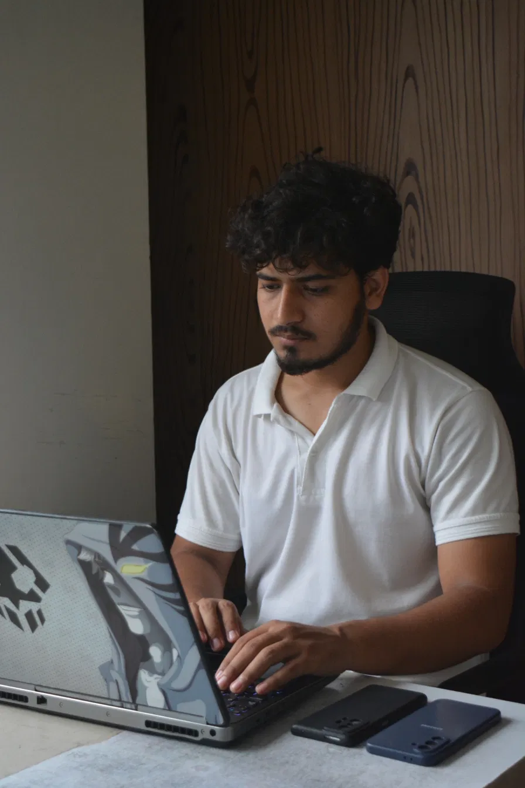

O-Level Foundation
Cambridge 2210 / 0478
- Full syllabus, chapter by chapter
- Weekly past-paper practice
- Doubt-clearing support
Siab Syntax is Afra's home for Cambridge Computer Science — recorded lectures, exam-ready notes, and private coaching for O & A Level students who want to actually understand the syllabus, not just survive it.

I'm Afrasiab, a Cambridge O & A Level Computer Science instructor based in Lahore. Over the years, I've worked with students who understand the theory but struggle when the question changes, the code doesn't behave as expected, or the mark scheme demands something more precise.
That's where Siab Syntax comes in. My approach is simple: understand the concept, break it down, practise it, and debug the mistakes. Whether it's algorithms, programming, data structures, computer architecture, or exam technique, I focus on making difficult concepts feel logical rather than overwhelming.
Select a paper and explore chapter-wise Computer Science notes. Click any chapter to open its PDF.
Small batches, real feedback on your answers, and a plan built around your exam date.
Recorded lessons on YouTube so students can pause, rewind and revisit difficult concepts before the exam.